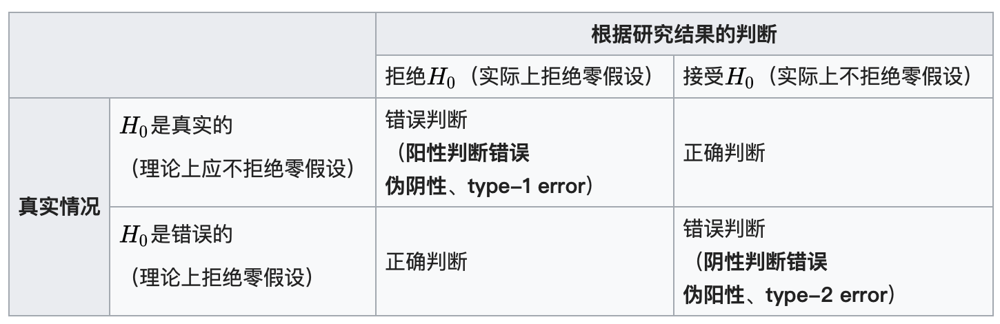

假设检验
统计上对参数的假设，就是对一个或多个参数的论述。而其中欲检验其正确性的为零假设（null hypothesis），通常表示为$H_0$，零假设通常由研究者决定，反映研究者对未知参数的看法。相对于零假设的其他有关参数之论述是备择假设（alternative hypothesis），通常表示为$H_1$，它通常反应了执行检定的研究者对参数可能数值的另一种（对立的）看法，当经过假设检验后，如果零假设被否定，那么我们转而接受备择假设。
假设检验的种类包括：Student-t检验，Z检验，卡方检验，F检验等等。
假设检验的步骤
- 最初研究假设为真相不明。
- 第一步是提出相关的零假设和对立假设。这是很重要的，因为错误陈述假设会导致后面的过程变得混乱。
- 第二步是考虑检验中对样本做出的统计假设；例如，关于独立性的假设或关于观测数据的分布的形式的假设。这个步骤也同样重要，因为无效的假设将意味着试验的结果是无效的。
- 决定哪个检测是合适的，并确定相关检验统计量 T。
- 在零假设下推导检验统计量的分布。在标准情况下应该会得出一个熟知的结果。比如检验统计量可能会符合学生t-分布或正态分布。
- 选择一个显著性水平 $\alpha$，若低于这个概率阈值，就会拒绝零假设。最常用的是 5% 和 1%。
- 根据在零假设成立时的检验统计量T分布，找到数值最接近备择假设，且几率为显著性水平 (α)的区域，此区域称为“拒绝域”，意思是在零假设成立的前提下，落在拒绝域的几率只有α。
- 针对检验统计量T，根据样本计算其估计值$t_{obs}$。
- 若估计值$t_{obs}$未落在“拒绝域”，接受零假设。若估计值$t_{obs}$落在“拒绝域”，拒绝零假设，接受对立假设。
假设检验的类型：
- 双侧检验
- 单侧检验
z统计量和t统计量的区别
推论统计中很多时候都是求得到一定样本均值的概率。z统计和t统计可以用来检验你两个平均数之间差异显著的程度，z检验适合大样本的情况（样本容量大于30），而t检验适合小样本的情况。
Z检验：
如果检验一个样本平均数$\bar{X}$与一个已知的总体平均数$\mu_0$的差异是否显著，则Z值计算公式为：
$$
Z=\frac{\overline{X}-\mu_{0}}{\frac{S}{\sqrt{n}}}
$$
要注意的是，这里使用了样本标准差来估计总体标准差（中心极限定理）。
如果检验来自两个的两组样本平均数的差异性，从而判断它们各自代表的总体的差异是否显著。其Z值计算公式为：
$$
Z=\frac{\overline{X}_{1}-\overline{X}_{2}}{\sqrt{\frac{S_{1}}{n_{1}}+\frac{S_{2}}{n_{2}}}}
$$
T检验
当样本容量小（小于30）的时候，统计量的分布不再满足正态分布，而转而满足T分布，需要使用T检验，公式为：
$$
T=\frac{\overline{X}-\mu_{0}}{\frac{S}{\sqrt{n}}}
$$
第一型及第二型错误（Type I error & Type II error）
在假设检验中，有一种假设称为“零假设（虚无假设）”；假设检验的目的就是利用统计的方式，推翻零假设的成立（也就是对立假设成立）。若零假设（虚无假设）事实上成立，但统计检验的结果拒绝零假设（接受对立假设），这种错误称为第一型错误。若零假设事实上不成立，但统计检验的结果不拒绝零假设（接受零假设），这种错误称为第二型错误。
